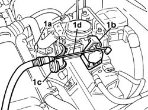
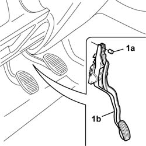

1068A10 accelerator control cable - r + r
- Path
- Procedures > 10 ENGINE > 1068 ACCELERATOR CONTROLS > 1068A accelerator pedal control > 1068A10 accelerator control cable - r + r
- Kind
- repair procedure (removal / refitting; the operation number is the code)
- Applies to
- all engines; all production periods
- Interactive page
- https://sloeber94.github.io/elrnDB-fDbl/en/#/2584254
Applies to: all engines; all production periods
 Removing
Removing
 Refitting
Refitting1048A10 air cleaner filtering element - replace
1. Lift up the spring (1a), release the cable from the fastening (1b) on the butterfly control device and from the bracket (1c), then place the accelerator control cable (1d) to the side.

Applies to: all engines; all production periods
1. Disconnect the cable (1a) from the accelerator pedal (1b).
Remove the accelerator cable, disconnecting it from the rubber cable duct on the bodyshell.

Applies to: all engines; all production periods
Refitting
RemovingPosition the accelerator cable on the mounting bracket and fit it on the butterfly valve.
Fit the rubber cable duct on the bodyshell and connect it to the accelerator pedal.
Topics linked from this page (1)
Topics that link to this page (7)
- 1004B10 POWER UNIT WITH MANUAL GEARBOX - R.R
- 1016C11 single cylinder head-r r gasket for versions with air conditioner
- 1028H20 piston with connecting rod - r r
- 1028H21 piston with connecting rod - r r
- 1068A30 accelerator pedal - r + r
- 1072B10 inlet manifold - r + r and replace seal
- 1084B50 timing mount oil pipe - r r